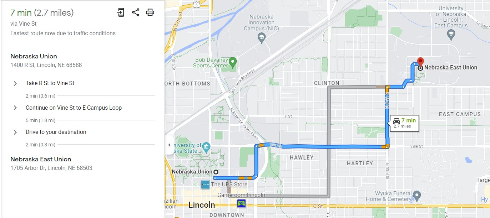

I'd describe myself as more of a visual learner -- or at least that I memorize more things if I can format them as an image in my memory. For example, a diagram of a plant is much easier for me to recall than reciting the parts of a plant. That's what inspired me to write this blog post after reading Ben Schneiderman's paper, "The Eyes Have It: A Task by Data Type Taxonomy for Information Visualization". The common phrase the title is referencing is "a picture is worth a thousand words" because most explanations are understodd quicker visually than verbally (or written). So with that logic in mind, an interactable visual is worth a thousand pictures because it's basically a picture++.
That's why computers are a technological marvel. They're not just progress for progress's sake, but serve an incredibly helpful purpose for everyone! With access to a computer, anyone can make a user interface that's easily digestable for an entire database of information. Take for example, Google Maps; here's a screenshot of me searching for directions to go between both campus unions for my university, University of Nebraska-Lincoln.
In the sidebar to the left is a list of the turns I'd have to take. This is representative of a world without computers, how I'd recieve the directions if someone had to verbally tell me them. Personally, I'd equate it to memorizing how food gets processed through the human body: difficult to recall accurately if you don't know the digestive track that well. This is especially unfortunate in a foreign place -- which is bound to happen to anyone eventually -- where you can't use familiar landmarks to remember directions.
The main body of this interface, the map itself, showcases the strengths of a visual interface. I can intuitively understand that I need to take certain streets and what turns to take using the highlighted line. Despite displaying more information, it's easier to visually ignore extraneous details while also picking out what's actually important. The extra details on demand actually allow map interfaces to cater to more people. For example, it let's people learn the route in different methods too. I could memorize the amount of left turns before I need to take the actual turn instead of a street name.
I honestly couldn't imagine navigating without a map -- especially without the convinience that digital maps offer with route calculations. While technology may have made humans use less of their brain for a lot of tasks, I don't find this to be particularly harmful to the average person. Instead, we can focus on what matters more. Like reaching our destinations in a timely manner rather than fumbling around town, hopelessly lost.